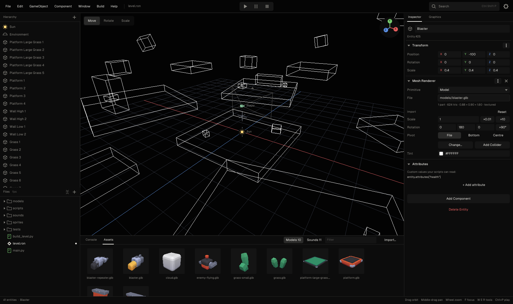

Tutorial: a first-person shooter
Time: 40 minutes · You'll need: the first scene and coin collector tutorials, or some time in Oberon
You'll build Blaster Arena, a small first-person shooter on floating grass platforms, using Kenney's free (CC0) Starter Kit FPS models and sounds. You look around with the mouse and walk with WASD. You can double-jump, shoot two kinds of blaster, and fight four drones that shoot back.

Along the way you'll use:
- the Assets tab and per-model import settings,
- Audio Sources and one-shot sounds,
- mouse look with a captured cursor,
- ray casts for shooting and line of sight,
- a HUD drawn from a script,
- headless tests, and exporting to Windows and Linux.
The finished project is in
examples/oberon/fps/. Open it any time to
compare:
cargo run -p oberon --release examples/oberon/fps/level.ron1. The assets#
Make a project folder and copy in Kenney's files, keeping the folders:
blaster-arena/
├── models/ platform.glb, wall-low.glb, enemy-flying.glb, blaster.glb, …
│ └── Textures/colormap.png
├── sounds/ blaster.ogg, enemy_hurt.ogg, jump_a.ogg, walking.ogg, …
└── sprites/ crosshair.png, crosshair-repeater.png, hit.pngYou can take them from examples/oberon/fps/ or from
Kenney's Starter Kit FPS. All
the models share one texture atlas, colormap.png.
Open Oberon in the folder, then choose Window → Assets. The Assets tab next to the Console shows every model as a thumbnail. Click Sounds to see the sound effects as waveforms, and double-click one to hear it.
Fix the facing once#
glTF models face +Z, but AUTOMATA's forward is −Z. That's the way a camera looks and the way scripts aim. Kenney's blasters and drone point at +Z, so held as-is they'd point back at you.
You could rotate every entity 180°, but scripts set these rotations every frame. It's simpler to fix the files themselves:
- Drag
blaster.glbfrom the Assets tab into the scene and select it. - In the Inspector, find the Import block under the Mesh Renderer.
- Press +90° next to Rotation twice, so it reads
0, 180, 0.
Do the same for blaster-repeater.glb and enemy-flying.glb. Each file now
has a *.glb.import.ron next to it. Every entity that uses the model is
turned, in Play, under run_scene and in exported games alike. Delete the
test blaster afterwards. See Models → Import settings
for scale and pivot.
2. The level#
Drag platforms and walls from the Assets tab onto the scene. The example uses
Kenney's layout: five platform-large-grass tiles at different heights,
four small platforms, two wall-high and two wall-low, plus grass tufts
and clouds for decoration. Positions are in build_level.py if you'd like to
match them exactly.
For each platform and wall, press Add Collider in the Mesh Renderer.
Oberon looks at each model. platform-large-grass is nearly a slab, so it
gets a box raised to sit on the model's base. The small platforms and the
walls have bevels and notches, so they get a Mesh collider made of
their own triangles. Either works for static scenery. The example sets
every platform's Shape to Mesh, so the bevelled edges are exact,
and gives the walls boxes.
Leave out the rigid body: a collider with no rigid body is static scenery
that never moves.
Add a Sun and an Environment from GameObject. In the
Graphics tab, set Background and Fog Color to the same blue-grey,
(0.36, 0.39, 0.46), and turn Fog on with a density of about 0.015, so
the far clouds fade into the sky.
3. The player#
Create an empty entity named exactly Player at (0, 1, 0). The drones
look for that name. Give it:
| Component | Settings |
|---|---|
| Rigidbody | Body Type Kinematic (position) |
| Collider | Capsule, Radius 0.3, Half Height 0.5 |
| Character Controller | Defaults (the script does the moving) |
| Camera | Field of View 80 |
| Audio Source | Clip sounds/walking.ogg, Volume 0.35, Loop on, Play On Start off |
| Attributes | health (Int) = 100 |
Then add the two weapons as plain entities named Blaster and Blaster
Repeater, using their models with Scale 0.4. Don't give them colliders,
or your own shots would hit them. The player script carries them around.
Attach scripts/player.py to the Player (Add Component → Script…, then
type the new name). The rest of this section walks through it. The finished
file is in the example folder.
Mouse look#
start captures the cursor, and update turns the mouse movement into yaw
(left/right) and pitch (up/down). Esc gives the cursor back, and a click
captures it again:
# scripts/player.py
# Mouse capture: Esc frees the cursor, a click takes it back.
clicked_to_capture = False
if inp.just_pressed("escape"):
inp.lock_mouse(False)
elif not inp.mouse_locked and inp.mouse_just_pressed("left"):
inp.lock_mouse()
clicked_to_capture = True
# Mouse look.
dx, dy = inp.mouse_delta
s["yaw"] -= dx * SENSITIVITY
s["pitch"] = max(-1.5, min(1.5, s["pitch"] - dy * SENSITIVITY))
yaw, pitch = s["yaw"], s["pitch"]The camera then rides at eye height and looks along the view direction:
# scripts/player.py
cam = entity.camera
if cam is not None:
cam.position = eye
cam.target = tuple(e + f for e, f in zip(eye, forward))Walking, jumping and footsteps#
WASD (or the arrows) moves relative to where you face. Speed eases in rather than snapping, and gravity pulls the controller down unless it's grounded:
# scripts/player.py
grounded = ctx.physics.grounded(entity)
vy = s["vy"]
if grounded and vy <= 0.0:
if s["air"] > 0.35:
ctx.audio.play("sounds/land.ogg", volume=VOLUME)
s["air"] = 0.0
s["jumps"] = JUMPS
vy = -2.0 # keeps the controller pressed onto slopes
else:
s["air"] += dt
vy -= GRAVITY * dt
if inp.just_pressed("space") and s["jumps"] > 0:
vy = JUMP
s["jumps"] -= 1
ctx.audio.play(random.choice(JUMP_SOUNDS), volume=VOLUME)JUMPS = 2 gives one jump from the ground and one in the air. Each jump
plays one of three jump sounds at random, so repeats don't sound mechanical.
Footsteps use the Player's own Audio Source. It's a loop, so the script starts it when you begin walking and stops it when you stop:
# scripts/player.py
walking = grounded and math.hypot(vx, vz) > 1.0
if walking != s["walking"]:
s["walking"] = walking
if walking:
entity.audio.play()
else:
entity.audio.stop()Shooting#
A shot is a ray cast from the eye. Whatever it hits first, if that entity
has a health attribute, loses some. The Blaster fires three slightly
spread rays (a small shotgun). The Repeater fires one ray, but faster.
Every hit throws sparks:
# scripts/player.py
for _ in range(weapon["shots"]):
jitter = (random.uniform(-spread, spread), random.uniform(-spread, spread))
direction = normalized(offset(forward, (right, up), jitter))
hit = ctx.physics.raycast(eye, direction, RANGE, ignore=entity)
if hit is None or hit.entity is None:
continue
# Sparks fly off whatever it hit, back along the surface's normal.
count = 24 // weapon["shots"]
health = hit.entity.attributes.get("health")
if health is not None and hit.entity.name != entity.name:
hit.entity.attributes["health"] = health - weapon["damage"]
s["marker"] = 0.15
# Drones spit hot red-orange sparks.
ctx.particles.burst("sparks", hit.point, hit.normal, count * 2,
color=(12.0, 2.8, 0.6, 1.0))
else:
ctx.particles.burst("sparks", hit.point, hit.normal, count)ignore=entity keeps the ray from hitting your own capsule.
ctx.particles.burst plays a one-off effect that cleans up after itself.
Here it's the sparks preset, aimed along the hit's normal so the sparks
fly back off the wall. A colour above 1 glows. See
Particles. The WEAPONS
list at the top of the file holds each blaster's cooldown, damage, spread,
sound and crosshair. Press E to switch between them. Try changing the
numbers while the game runs; scripts hot-reload when you save.
The held blaster is just an entity that the script moves in front of the camera every frame, offset right, down and forward along the view axes. The other blaster is parked far below the level.
The HUD#
ctx.hud draws over the game for one frame, so the script redraws it every
frame. Positions are screen pixels, and shapes are placed by their centre:
# scripts/player.py
hud.image(weapon["crosshair"], cx, cy, size=(44, 44))
if s["marker"] > 0.0:
hud.image("sprites/hit.png", cx, cy, size=(64, 64), color=(1.0, 1.0, 1.0, 0.9))
s["marker"] -= dtThe rest of draw_hud adds a health bar at the bottom left, a red flash
when you're hit, and a pip for each drone still flying at the top right.
Text uses the built-in font. size is the line height in pixels,
shadow=True adds a soft drop shadow, and align says where x sits:
hud.text(f"{health:.0f}%", left + width + 20, bottom, size=26, shadow=True)Once the last drone falls, an outlined "ARENA CLEAR" fades out at the top
of the screen, drawn with align="center".
4. The drones#
Drag four enemy-flying.glb drones into the air around the level and name
them Enemy 1 to Enemy 4. Give each one:
- a Ball collider, radius
0.6, offset(0, 0.45, 0), so your shots have something to hit. Use no rigid body, because the script moves it; - a
health(Int) attribute of100; - a Nav Agent: Speed
3, Radius0.6, Hover1.5, Stop Distance3.5, and Face Movement off (the script aims the drone itself); - the script
scripts/enemy.py.
Then add an empty entity called Navigation with a Navigation
component: Agent Radius 0.4, Jump Distance 4, Jump Height 2.5.
Press Bake to see where the drones can fly: blue over the platforms,
with orange arcs for the hops between them. See
Navigation.
Each frame a drone bobs and checks its health. A lower number than last frame means a shot landed, and the drone makes a note of where you were:
# scripts/enemy.py
health = entity.attributes.get("health", 100)
position = entity.transform.position
if health < s["health"]:
if health <= 0:
ctx.audio.play("sounds/enemy_destroy.ogg", volume=VOLUME, position=position)
entity.despawn()
return
ctx.audio.play("sounds/enemy_hurt.ogg", volume=VOLUME, position=position)
if player is not None:
s["clue"] = player.transform.position # go and look for the shooter
s["health"] = healthPassing position= makes a one-shot sound fade with distance, so a drone
blowing up across the map is quieter than one next to you.
Then it uses its senses. ctx.ai.can_see checks whether you're inside a
110° cone in front of the drone, within 14 m, and not behind a wall (it
casts a ray to find out). ctx.ai.hear returns the noises made near it
this frame. Every blaster shot makes one, from player.py:
# scripts/player.py
ctx.ai.noise(entity, radius=HEARD_FROM, kind="shot") # drones hear it# scripts/enemy.py
s["sees"] = ctx.ai.can_see(entity, player, fov=FOV, distance=SIGHT, eye=CENTER, aim=0.5)
if s["sees"]:
s["unseen"] = 0.0
s["clue"] = player.transform.position
else:
s["unseen"] += dt
for noise in ctx.ai.hear(entity, kinds="shot"):
s["clue"] = noise.positionSo you can sneak up on a drone from behind, but the first shot you miss gives you away to every drone within 10 m.
What the drone does with that is up to its state machine. It has three moods, and it's in exactly one at a time:
- idle: bob in place and look slowly from side to side;
- chase: fly after you and fire whenever it has a clear shot;
- search: fly to where it last saw or heard you and look around.
# scripts/enemy.py
s["brain"] = ctx.ai.state_machine(
{
"idle": {"enter": settle, "update": idle},
"chase": chase,
"search": {"enter": start_search, "update": search},
},
initial="idle",
)Each mood is a function that runs every frame. Returning the name of
another mood switches to it; enter functions run once on the way in.
Here's idle:
# scripts/enemy.py
def idle(entity, ctx):
"""Bob in place and look slowly from side to side."""
s = entity.state
hx, _, hz = s["home"]
entity.transform.position = (hx, s["y"], hz)
look(entity, s["yaw"] + math.sin(s["t"] * 0.8) * LOOK_AROUND)
if s["sees"]:
return "chase"
if s["clue"] is not None:
return "search"While it's chasing, the Nav Agent does the flying. go(player) finds the
shortest way round the walls and across the gaps, and follows you as you
move. With a clear shot, the drone stops 3.5 m short so it's in range;
without one it keeps coming round the wall. The drone bobs by moving its
hover height up and down:
# scripts/enemy.py
if entity.nav is not None:
# Hold back at firing range while it has a clear shot; otherwise
# keep coming, round the wall in the way.
entity.nav.stop_distance = s["hold_back"] if s["sees"] else 0.5
fly_to(entity, player)# scripts/enemy.py
entity.nav.go(target)
entity.nav.hover = s["hover"] + bob(entity)Out of sight for 3 seconds, it switches to search; seeing nothing there for another 3, it settles back to idle wherever it ended up.
Four times a second, a chasing drone fires if you're within 6 m. It casts its own ray at you and only fires if the first thing the ray hits is the Player:
# scripts/enemy.py
direction = tuple(c / distance for c in d)
hit = ctx.physics.raycast(center, direction, RANGE, ignore=entity)
if hit is not None and hit.entity is not None and hit.entity.name == "Player":
ctx.audio.play("sounds/enemy_attack.ogg", volume=VOLUME, position=center)
player.attributes["health"] = player.attributes.get("health", 100) - DAMAGESee AI for the state machines, behaviour trees, sight and hearing.
The player script notices its own health dropping, flashes the screen, and
respawns you at full health when it reaches zero or when you fall off the
world. The two scripts never call each other; they only share attributes.
5. Play#
Press Play (Ctrl+P) and click the view to capture the mouse. Clear all four drones, and the Console prints All drones down. Nice shooting!
Press Esc to free the mouse, then Stop. Everything goes back to how it was: despawned drones return, and health resets.
6. Test it headless#
examples/oberon/fps/tests/test_fps.py has two kinds of test. Some run the real
scene with run_scene(headless=True): the player lands on the platform,
idle drones bob and look around, a drone that sees you shoots and one
looking the other way doesn't, a shot drone chases you round the walls, and
falling off respawns you.
Others drive one script with a fake ctx to check shooting, switching
weapons and jumping without a mouse, and walk a drone through its moods:
see you, lose you behind a wall, search, give up. The fake ctx uses the
real AI helpers (from automata.script_api import AI), so sight and
hearing work as in the game.
Gameplay over time needs a paced run, otherwise ctx.time.delta is close to
zero:
at.run_scene("level.ron", headless=True, max_frames=90, target_fps=60)Run them with:
pytest examples/oberon/fps/tests7. Export it#
The example includes a build.ron that sets the start scene to level.ron
and leaves out tests/ and build_level.py. In Oberon, choose Build →
Build Game (Ctrl+Shift+B), or from a terminal:
automata-cli build examples/oberon/fps --target allYou get build/linux/Blaster Arena/Blaster Arena and
build/windows/Blaster Arena/Blaster Arena.exe, plus a .tar.gz and a
.zip to share. The models, their import settings, the sounds and the
sprites are all included. See Exporting your game.
Where next#
- Add a third weapon: one more entry in
WEAPONSand one more entity. - Give drones a patrol path: store waypoints in attributes and move
hometowards them. - Add health pickups: an entity whose script checks its distance to the
Player, adds to the Player's
healthattribute, plays a sound and despawns.
Credits: models, sounds and sprites by Kenney (CC0).
The level layout and tuning follow his MIT-licensed Starter Kit FPS. See
CREDITS.md.